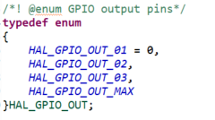
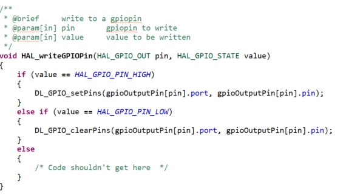
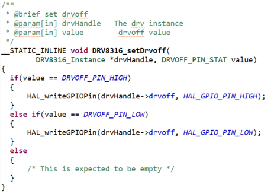
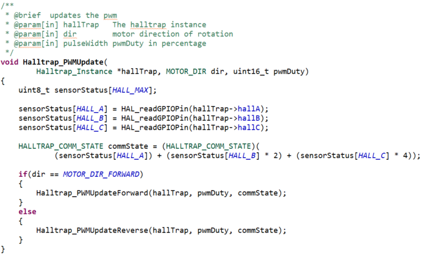
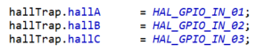

BLDC Motor Control Library Overview¶
1. Overview¶
MSPM0’s BLDC Motor Control Library is made up of three layers. The MSPM0 DriverLib layer consists of all the peripherals defined and is configured using SysConfig. The Module Layer contains 3 modules Hardware Abstraction Layer (HAL) module, Motor Driver module and Hall-sensored Trap module. The HAL module provides Application Programming Interfaces (APIs) to manipulate and configure MCU pins and peripherals. The Motor Driver module provides programming related to the motor driver used. The hall-sesnored trap module provide the APIs that control and generate the PWM outputs. The Application layer contains GUI or application specific APIs that are defined by the user.
Figure 1 - Diagram showing the layers and modules
2. HAL Module¶
2.1 Overview¶
The HAL module consists of microcontroller-specific code that provides generic APIs to control and configure the user-defined pins and peripherals. The HAL APIs are developed to allow changing the HAL module used without requiring any code changes to other modules.
The HAL is purposely meant to only abstract the key pins and peripherals needed to control a motor driver. A user is free to expand the HAL’s API to use other pins, peripherals and features of the microcontroller but its strongly recommended not to modify existing APIs to ensure ease migration to new versions of this library.
No application specific code or motor driver specific code should exist in the HAL layer or in its API. Instead, it treats the pins and peripherals in a generic manner. For example, a motor driver likely has a nSLEEP pin but the HAL layer will only provide APIs to control the state of a GPIO output pin. It’s the responsibility of the motor driver module to associate the specific HAL GPIO output pin to the motor driver’s nSLEEP pin.
2.2 Enums¶
The HAL layer uses enums to determine the generic references to different peripherals. Each peripheral has separate enums that are associated with pins used in that peripheral. This allows the user to change the peripheral pins without changing the code in other modules that utilizes its API. For example, the nSLEEP pin in the motor driver module is associated with one enum in a GPIO peripheral. The user can change the pin associated with the GPIO enum without any code changes in motor driver module. Consider an enum HAL_GPIO_OUT in which total number of enums represent the maximum number of GPIOs used as outputs.

Figure 2 - enum representing GPIO output pins
Figure 2 shows an example of an enum that represents 3 different GPIO output pins. The purpose of this enum is to provide a way for the HAL and motor driver APIs to reference GPIO outputs in a generic manner. The number of GPIOs determined here are based on the application requirement and the user is free to add or delete the number of GPIOs based on their application. The user will need to keep in mind the maximum amount of GPIO output pins required by different motor drivers supported in their software.

Figure 3 - Enum to MCU pin mapping
Figure 3 shows a snippet from the LP-MSPM0G3507 HAL which shows how the HAL_GPIO_OUT_02 enum is now associated with a specific GPIO on the MSPM0G3507. GEN_GPIO_OUT_XXXX defines are from TI SysConfig, which will be discussed later. Note that each of those defines are representing values needed by the MSPM0’s DriverLib API to manipulate the specific pin.

Figure 4 - HAL API example
Now that the HAL provides the information needed to associate an enum to a specific pin, HAL_writeGPIOPin() shows the API used to change the output value of a pin associated with a given HAL_GPIO_OUT enum. It is important to note that the enum value is translated to MSPM0’s DriverLib API calls by utilizing internal structures and arrays in the HAL.

Figure 5 - Motor driver to HAL mapping
Here is a snippet from one of the DRV8316 firmware examples associating different HAL enums to corresponding pins on the motor driver. Here, the nSLEEP pin on the motor is mapped to HAL_GPIO_OUT_02.

Figure 6 - Motor driver module API
Finally when the user wants to change the output value of the nSLEEP pin on the DRV8316 motor driver, the user can call the generic HAL API while providing the enum value that is associated with the nSLEEP pin to make the change. Although this example is focused on HAL_GPIO_OUT enum, the concept is the same for every other pin/peripheral the HAL has created enums for, such as PWM, ADC inputs, GPIO inputs and SPI enums.
2.3 TI SysConfig¶
MSPM0 software utilizes a GUI tool called TI SysConfig to simplify configuration of pins and peripherals. Almost all MSPM0 SDK examples utilize SysConfig. For more information on how SysConfig works and how to use it, see TI SysConfig. It is important to note that the HAL modules provided by the SDK use SysConfig which is why you will not see DriverLib API calls to initialize peripherals and pins. Instead, the HAL uses defines created by SysConfig to map the specific pins and peripherals to the different generic HAL enums. Figure 3 shows how the GEN_GPIO_OUT_XXXX defines created by SysConfig are then mapped to the HAL structures and enum value.
3. Motor Driver Module¶
The objective of the motor driver module is to use the HAL enums associated with the pins of motor driver and provide APIs such as setting a sleep pin, reading a driver fault pin, SPI read, SPI write, voltage and current measurements. Figure 7 shows an internal structure used by the DRV8316 motor driver and how it contains variables meant to associate the HAL enums with specific pins on the motor driver. The motor driver module code uses the HAL APIs to develop the motor driver module but the user can add APIs or create their own motor driver module for the application.

Figure 7 - DRV8316 internal structure
3.1 Motor Driver Pin Association¶
The user must map the motor driver pins to HAL enums before using the motor driver module as below
Figure 5 - Motor driver to HAL mapping
3.2 Motor Driver APIs¶
The motor driver APIs are specific to a given motor driver in which the user can use to configure and control the motor driver. For example the DRV8316 has Control registers that are modified through SPI. The motor driver module contains a specific API that updates the registers.

Figure 9 – Example motor driver module API
For motor drivers with register maps, the number of registers will vary with motor driver. The above snippet is a generic API that updates any registers in the DRV device. The user can manipulate any register or bit fields with a single generic API. The user can build a number of APIs that updates the bit fields based on their application needs.
Another type of motor driver API is voltage and current sensing, which is dependent on the hardware and current sensing of the motor driver. For example, the DRV8316 hardware includes resistor dividers for voltage sensing, and the DRV8316 includes current sense amplifiers with programmable gain and a pre-set voltage reference. The APIs for module current and module voltage are generically used to read back the motor voltage or motor current respectively depending on the input parameters, such as scale factors, voltage references, voltage bias, and amplifier gain.
4. Hall-sensored Trap Module¶
The Hall-sensored Trap (halltrap) module consists of hall-based sensored trapezoidal algorithm for BLDC motor control. This layer takes care of updating the PWM based on the hall feedback. The code contains an API that reads digital Hall signal feedback and updates the PWM. This API is used to update the PWM.

Figure 10 – Halltrap module PWM update API
The halltrap module is unaware of the driver module used. This module can be used with any driver module without changing the code in it as long as the user maps the GPIO enums to which hall sensors are connected.

Figure 11 - Hall sensor pins to HAL pins
5. Application Layer¶
This layer contains user specific code. The user needs to specify the driver instance (i.e. DRV8316) halltrap instance and ensure that all pins are mapped correctly. The user can use the motor driver module and halltrap module APIs and to perform any hardware specific actions HAL APIs can be used.